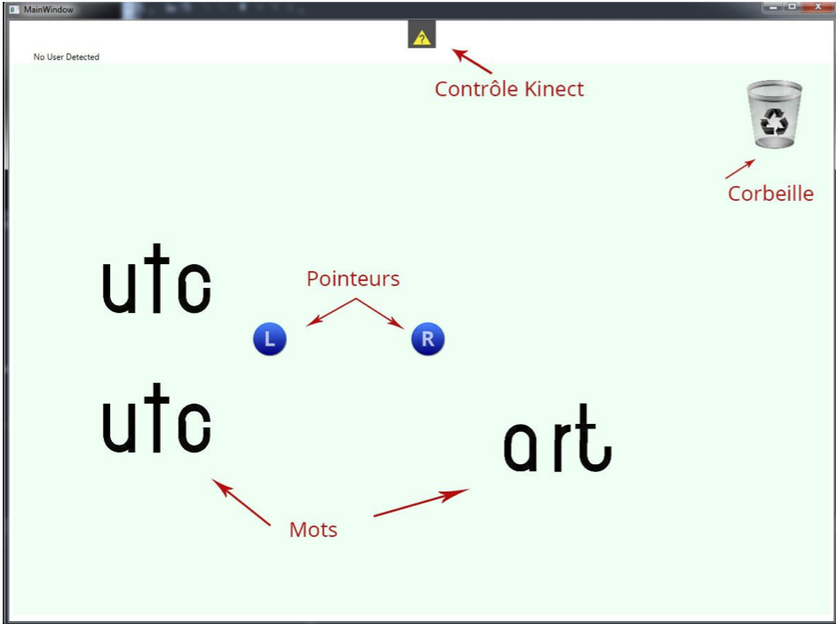

Présentation
En 2013, un projet de recherche et création fait l'objet d'une collaboration entre la compagnie de spectacles ALIS (http://www.alis-fr.com/), le collectif numérique i-Trace (http://i-trace.fr/) et l'UTC. Ce projet a été labellisé par le Centre d'Innovation de l'UTC. Il s'agit de proposer une création sous deux modalités articulées (performance sur scène de poésie numérique et création en ligne).
Ce projet est fondé sur un procédé inventé par Pierre Fourny, fondateur d'ALIS, intitulé la Poésie à 2 mi-mots. Ce dernier consiste à couper les mots d'un trait horizontal et à associer les moitiés de mots obtenus à d'autres mots pour en former de nouveaux (http://www.alis- fr.com/site/?q=node/26).
L'artiste (Pierre Fourny) réalise des interventions dans des établissements scolaires mais fait aussi des spéctacles sur scène. Il manipule les mots à l'aide de papier ou d'accessoires en bois. L'idée du projet est d'explorer la numérisation du procédé en gardant le lien entre action du performer et action sur scène. Nous nous sommes donc proposé pour développer un prototype d'une application permettant à l'artiste de manipuler des mots projetés sur un grand écran à l'aide de gestes (captés par une kinect).
Sur l'image ci-dessus, on aperçoit une capture d'écran de l'application. On retrouve les pointeurs pour les mains et les mots ainsi qu'une corbeille. Pour comprendre plus en détail le fonctionnement de l'application, veuillez regarder la vidéo présentée dans la page d'accueil.